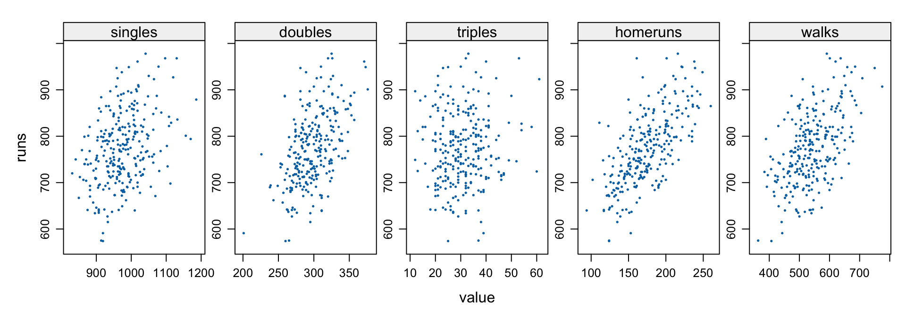
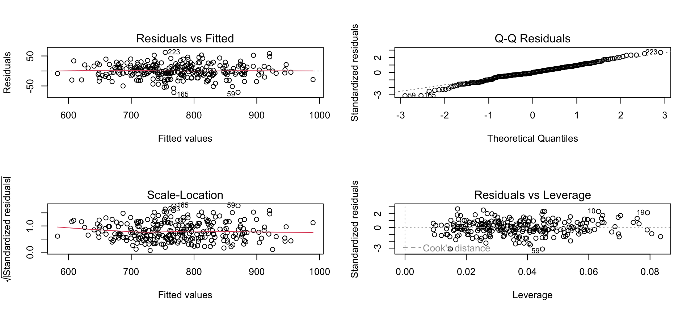
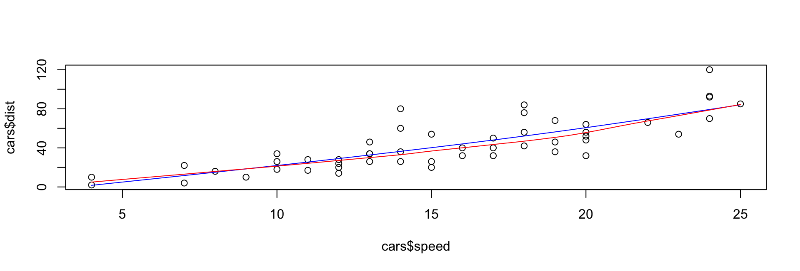

程式設計與應用
第二十章：迴歸模型
實踐大學
2026-06-08
預測連續值
迴歸用來做什麼
迴歸模型把連續的反應變數（依變數）關聯到一組預測變數（自變數／解釋變數）。三種用途：
- 預測——用體重推算 warfarin 劑量；估計信用卡客戶的餘額；
- 解釋——體重與飲食的關係，同時調整年齡、運動、遺傳；
- 推論——視覺化趨勢、ANOVA、檢驗變數顯著性。
本章從最簡單的模型——普通最小平方（OLS）線性迴歸——出發，建立、評估、精煉，再綜覽更豐富的模型類型。分類留到第二十一章。
一個簡單的線性模型
資料與問題
哪些打擊指標能預測球隊的得分？2000–2008 球隊打擊（第十六章以 SQL 取出，打包為 team.batting.00to08）：
用 lattice 把得分對每個變數散點，看出重要性——全壘打與保送都與得分連動明顯：
library(lattice)
attach(team.batting.00to08)
forplot <- make.groups(
singles=data.frame(value=singles, runs), doubles=data.frame(value=doubles, runs),
triples=data.frame(value=triples, runs), homeruns=data.frame(value=homeruns, runs),
walks=data.frame(value=walks, runs))
detach(team.batting.00to08)
xyplot(runs~value|which, data=forplot, scales=list(relation="free"),
pch=19, cex=.2, layout=c(5,1))
lm：配適
lm 以 OLS 配適線性模型。注意：公式裡的 + * - ^ 是特殊符號；要做字面算術請用 I() 包起來，多項式項用 poly(x, degree=) 生成。
Call:
lm(formula = runs ~ singles + doubles + triples + homeruns +
walks + hitbypitch + sacrificeflies + stolenbases + caughtstealing,
data = team.batting.00to08)
Coefficients:
(Intercept) singles doubles triples homeruns
-507.16020 0.56705 0.69110 1.15836 1.47439
walks hitbypitch sacrificeflies stolenbases caughtstealing
0.30118 0.37750 0.87218 0.04369 -0.01533 R 配適時幾乎什麼都不印——資訊要靠輔助函式取得（與 SAS／SPSS 刻意相反）。
檢視模型：summary
Call:
lm(formula = runs ~ singles + doubles + triples + homeruns +
walks + hitbypitch + sacrificeflies + stolenbases + caughtstealing,
data = team.batting.00to08)
Residuals:
Min 1Q Median 3Q Max
-71.902 -11.828 -0.419 14.658 61.874
Coefficients:
Estimate Std. Error t value Pr(>|t|)
(Intercept) -507.16020 32.34834 -15.678 < 2e-16 ***
singles 0.56705 0.02601 21.801 < 2e-16 ***
doubles 0.69110 0.05922 11.670 < 2e-16 ***
triples 1.15836 0.17309 6.692 1.34e-10 ***
homeruns 1.47439 0.05081 29.015 < 2e-16 ***
walks 0.30118 0.02309 13.041 < 2e-16 ***
hitbypitch 0.37750 0.11006 3.430 0.000702 ***
sacrificeflies 0.87218 0.19179 4.548 8.33e-06 ***
stolenbases 0.04369 0.05951 0.734 0.463487
caughtstealing -0.01533 0.15550 -0.099 0.921530
---
Signif. codes: 0 '***' 0.001 '**' 0.01 '*' 0.05 '.' 0.1 ' ' 1
Residual standard error: 23.21 on 260 degrees of freedom
Multiple R-squared: 0.9144, Adjusted R-squared: 0.9114
F-statistic: 308.6 on 9 and 260 DF, p-value: < 2.2e-16報表內容：殘差分布；一張係數表（估計值、標準誤、t 值、p 值、顯著星號）；以及配適統計量——R² = 0.914、調整後 R² = 0.911、壓倒性顯著的 F 統計量。一壘安打、二壘、三壘、全壘打、保送、觸身、高飛犧牲都重要；盜壘與被刺殺則否。
模型存取函式
summary 之外，還有一族擷取函式：
runs ~ singles + doubles + triples + homeruns + walks + hitbypitch +
sacrificeflies + stolenbases + caughtstealing (Intercept) singles doubles triples
-507.1601976 0.5670487 0.6911042 1.1583609 1 2 3 4 5 6
-35.572347 -10.526473 -5.920721 57.798284 -4.279294 -4.668995 2.5 % 97.5 %
(Intercept) -570.8582801 -443.4621151
singles 0.5158302 0.6182671
doubles 0.5744958 0.8077126
triples 0.8175297 1.4991921其他：effects（正交效果）、vcov（變異數–共變異數矩陣）、deviance、influence／influence.measures、anova（ANOVA 表）。
預測新值
predict(object, newdata, interval=c("none","confidence","prediction"), level=0.95, ...) 把模型套到新資料——可附區間：
fit lwr upr
1 899.5723 890.1239 909.0208anova(model1, model2, ...) 比較巢狀模型；update(model, formula) 在公式更動後重配——大資料上比從頭建快得多。
診斷圖
plot(lm 物件) 畫出標準診斷圖——殘差對配適值、殘差常態 Q-Q、scale-location、殘差對槓桿值：

看的是：殘差是否有結構（非線性）、是否偏離 Q-Q 直線（非常態）、scale-location 是否呈扇形（變異數不齊）、有沒有高槓桿離群點。
lm 細節
模型是 \(y = c_0 + c_1 x_1 + \cdots + c_n x_n + \varepsilon\)；OLS 選出使殘差平方和最小的 \(c_i\)。重點引數：formula（必填）；data、subset、weights、na.action；contrasts 控制因子編碼（treatment、Helmert……）；weights 給加權最小平方。同伴 glm、nls、loess、rlm 共享許多引數名。
當 OLS 不夠用
假設與其檢驗
OLS 在技術上只有在假設成立時才有效——但即使假設稍有偏離，往往仍預測得不錯：
- 反應變數對預測變數的線性；
- 誤差變異數齊一（同質變異）——用
car::ncvTest（非定常變異數分數檢定）； - 預測變數不共線（避免奇異配適）；
- 誤差常態、獨立。
嚴重違反時，改用下列替代方案。
穩健與抗拒迴歸
離群值會毀掉 OLS。兩道防線（套件 MASS）：
- 抗拒迴歸（resistant）——
lqs（最小截尾平方、最小中位數平方）：用點的子集配適、忽略極端點； - 穩健迴歸（robust）——
rlm：M 估計，反覆對大殘差降權（而非丟棄）。
子集選擇與收縮
預測變數太多？三種解法：
- 逐步選擇——
step（與MASS::stepAIC，涵蓋更多模型類型）依 AIC 增刪項目。 - 嶺迴歸（ridge）——
MASS::lm.ridge(formula, data, lambda=)把係數朝零收縮（L2 懲罰），馴服共線性。 - Lasso／最小角迴歸——
lars::lars(x, y, type=c("lasso","lar","forward.stagewise","stepwise"))（L1 懲罰）既收縮又選擇，把部分係數壓成零；一次算出整條路徑。
嶺與 lasso 都是懲罰迴歸；現代統一工具是 glmnet。
主成分與偏最小平方迴歸
預測變數又多又相關時，改對成分做迴歸——套件 pls，皆透過 mvr（別名 pcr、plsr）：
- 主成分迴歸（
pcr）——對預測變數的前幾個主成分做迴歸； - 偏最小平方（
plsr）——成分的選取同時考慮與反應變數的相關。
廣義與非線性模型
glm：廣義線性模型
glm 透過族（family）與連結函數（link）把線性模型延伸到非常態反應——預測的是期望反應的連結值：
| 族 | 典型連結 | 用途 |
|---|---|---|
gaussian |
identity | 一般線性迴歸 |
binomial |
logit | 二元／比例結果（第二十一章） |
poisson |
log | 計數 |
Gamma |
inverse | 正值、右偏連續 |
inverse.gaussian |
1/μ² |
（glmnet 也能配適懲罰版 GLM——family、lambda、alpha 在嶺↔︎lasso 間選擇。）
非線性模型
當關係對參數而言不是線性時：
nls(formula, data, start, ...)——非線性最小平方；由你給定函數形式與起始值。- 存活模型——
survival::survreg（參數式）與coxph（Cox 比例風險），對係數報告 Wald 檢定。
平滑：樣條、曲面、核
要彈性、無母數的趨勢：
- 樣條——
smooth.spline，以及公式內可用的splines::ns／bs； - 多項式曲面——
loess（局部迴歸）以局部多項式配出平滑曲面； - 核平滑——
ksmooth、density。

機器學習式迴歸
本章末預告以樹為基礎的迴歸（完整內容：第二十一、二十二章）：
rpart——遞迴分割（迴歸樹）；- bagging、boosting（
gbm）、隨機森林（randomForest）——樹的集成，各自高度可平行（第二十六章）； - PRIM（patient rule induction method）——bump hunting。
Tip
這是流程，不是單一函式。 用 lm 配適、讀 summary、看 plot，再用 update 迭代——增項、刪項、變換項。只有當診斷逼你時，才動用穩健／懲罰／非線性工具。
版權聲明
版權。 本講義改編自 Joseph Adler 著、O’Reilly Media 出版之 R in a Nutshell: A Desktop Quick Reference（第二版）。原著作者與出版社保留一切權利。
僅限非商業用途。 本教材僅供教學使用，不得用於商業營利。
標示出處。 任何重製、散布或使用本教材，皆須妥善標註原始出處。

R in a Nutshell: A Desktop Quick Reference